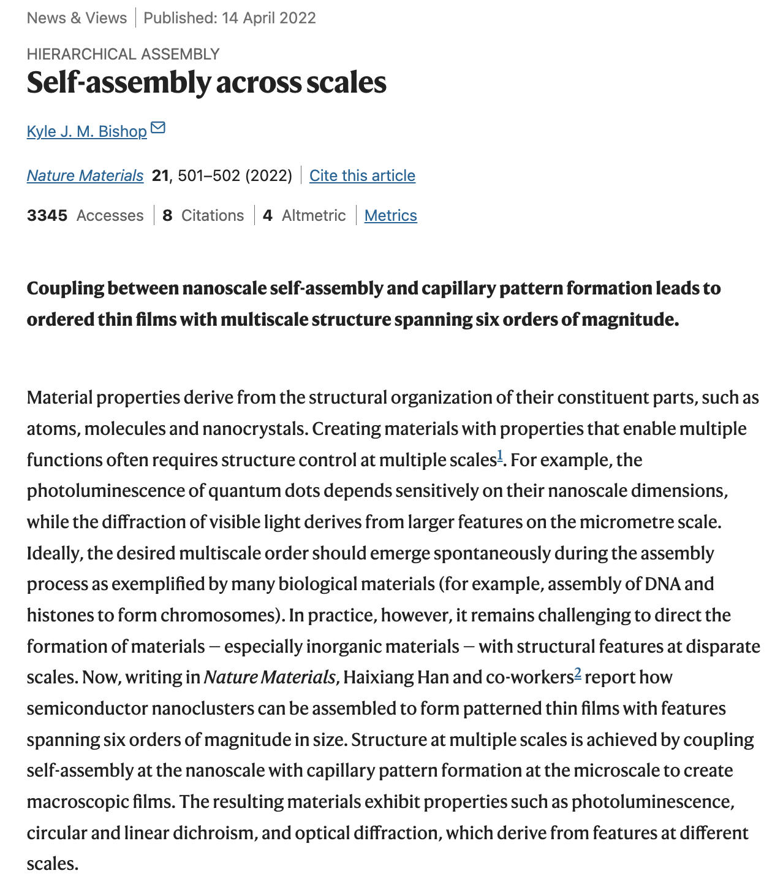
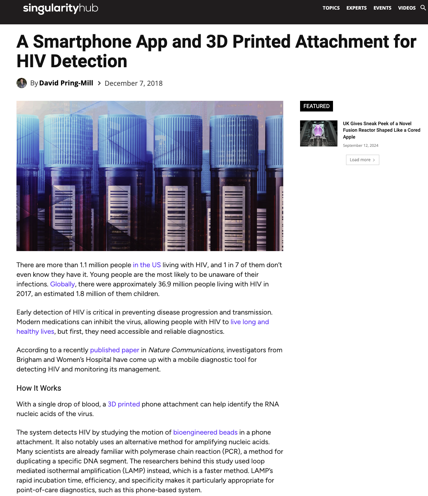
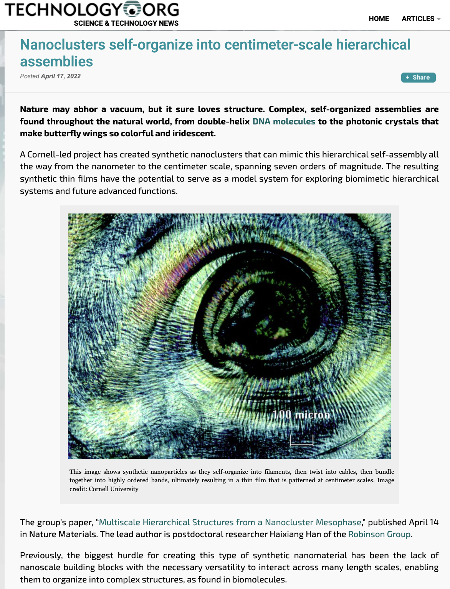
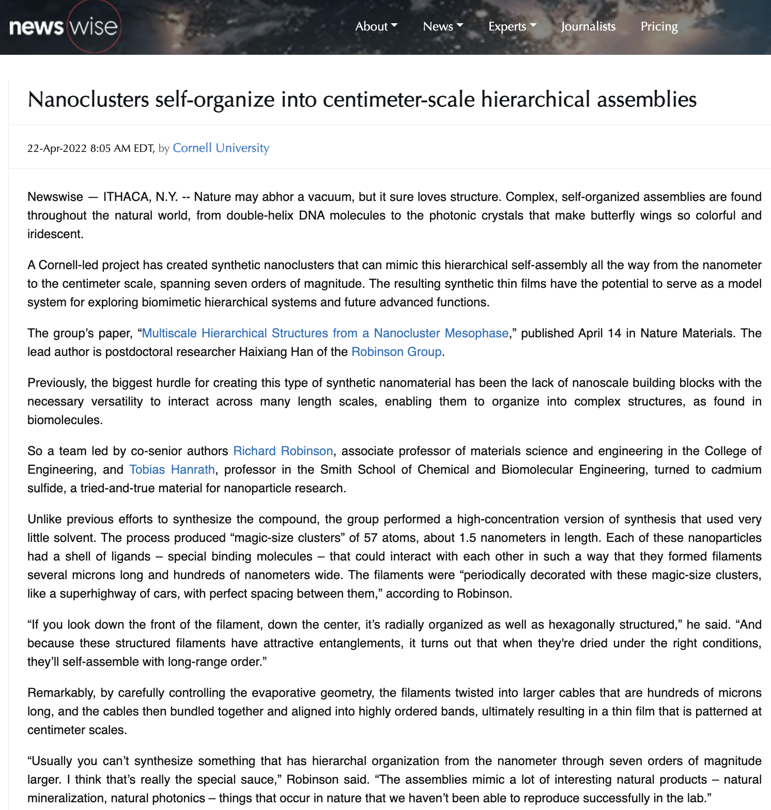
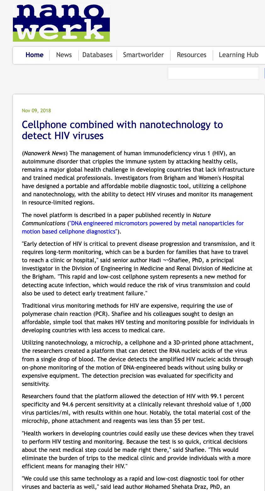
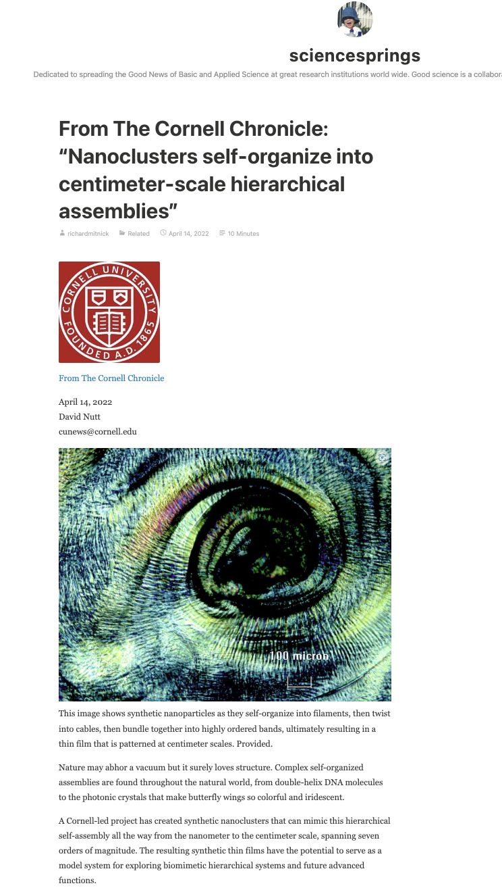

Work in the media:

Source: Bishop, K. M. Nature News and Views (2022)

Source: Nutt, D. Cornell Chronicle (2022)

Source: Editorial board, Phys.org (2022)

Source: Editorial board, Phys.org (2018)

Source: Editorial board, Eurekalert (2022)
Source: Editorial board, Eurekalert (2018)

Source: Pring-Mill, D. Singularity Hub (2018)

Source: Editorial board, Technology.org (2022)

Source: Editorial board, Newswise (2022)
Source: Editorial board, Science News.Net (2022)

Source: Editorial board, Nanowerk.com (2022)

Source: Editorial board, Nanowerk.com (2018)

Source: Editorial board, Science Springs (2022)

Source: Editorial board, Medical Xpress (2018)
Maintained by the
shantanukallakuri team — (Source Code)
Hosted on GitHub Pages — Powered by
Git-Wiki v2.8.1